BIART шығармашылық индустриялар мектебі, Астана қаласы
ӨЗ ДАУСЫҢДЫ тап!
500-ден астам отбасы балаларының шығармашылық дамуын бізге сеніп тапсырды
4 бағыт және 25 курс
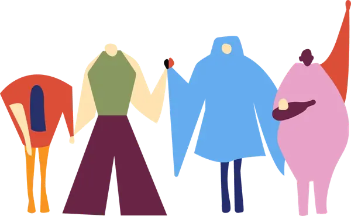
BIART
Дәстүр мен инновация тепе-теңдігі
Домбыра мен жетігеннен 2D-анимация мен stop-motion-ға дейін: классикалық академиялық білім және қазіргі цифрлық практикалар бір кеңістікте.
Музыка / Би / Театр / Digital / Музыка / Би / Театр / Digital /
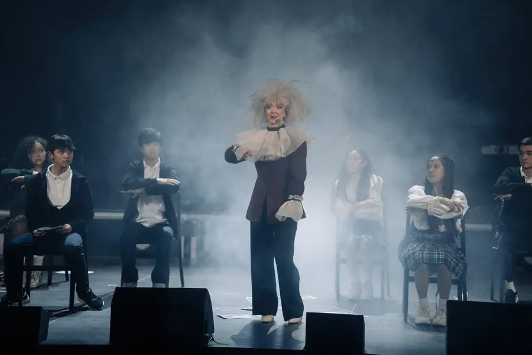
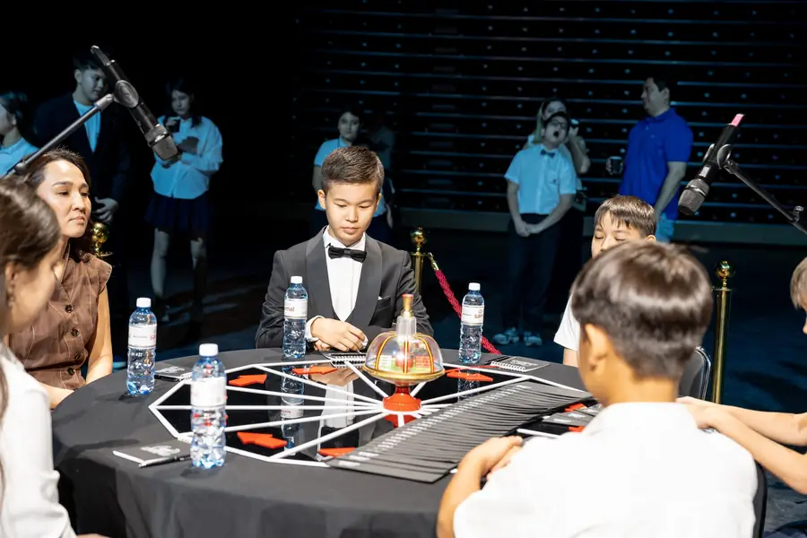
Мектеп туралы
Біз әр адамның өмірінде «үшінші орын» жасаймыз
Өнер тұлғаны қалыптастыратын кеңістік.
500
оқушы мектепте оқиды, ай сайын байқаулар мен мюзиклдерге қатысады
8+
жылдық сараптама — оқытушыларымыздың орташа жұмыс өтілі
ХХ%
клиенттердің қанағаттану деңгейі
5000 м²
жеке кеңістік: музыка студиялары, би залдары, digital-зертханалар, өз сахнамыз
Неге BIART
Біздің артықшылықтарымыз
01
Әлемдік сахналардағы педагогтар
BIART педагогтары Қазақстанды АҚШ, Германия, Австрия, Испания және Финляндия сахналарында таныстырды, Италия мен Финляндиядағы байқауларда жеңіске жетті, Вена, Мәскеу және Рим консерваторияларында тағылымдамадан өтті.
02
Лауреат оқушылар
Олардың оқушылары: Nouvelles Etoiles (Франция), Concerto Virtuoso (Мәскеу), Jumeirah Sounds байқауларының лауреаттары мен финалистері, ҚазҰӨУ республикалық олимпиадаларының жүлдегерлері.
03
Кәсіби жабдық
Сабақтар баланың жайлылығы мен тиімді дамуын қамтамасыз ететін кәсіби жабдықта өтеді.
Кеңістік
Шығармашылыққа арналған 5000 м²
Музыка студиялары, би залдары, digital-зертханалар және өз сахнамыз. Жолға меңзерді апарыңыз — залды көрсетеміз.
01
Концерт залы, 400 орын
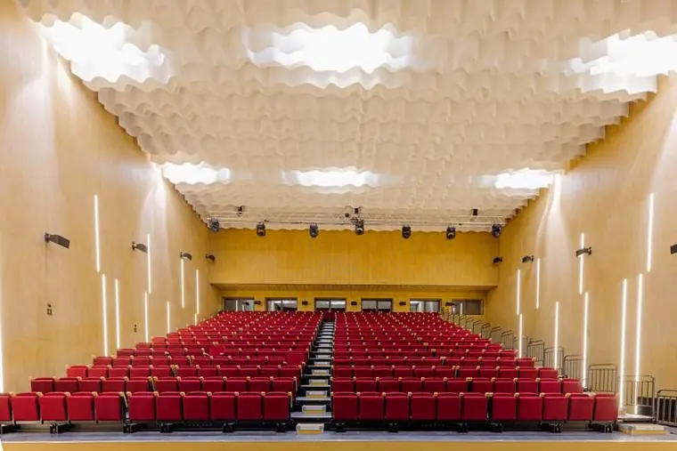
02
Кулисалы және экраны бар сахна
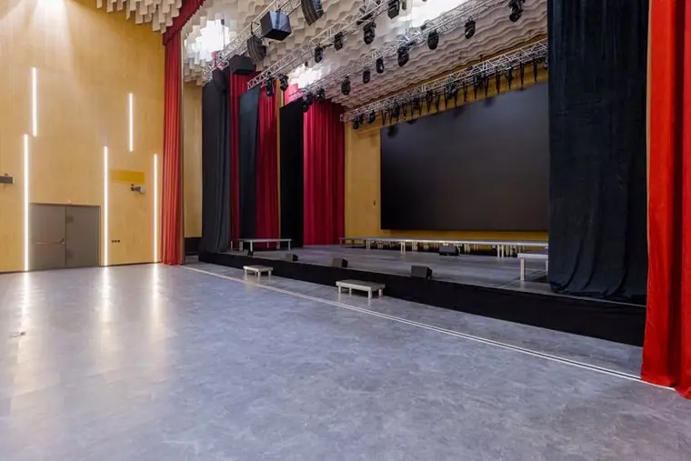
03
Би залы
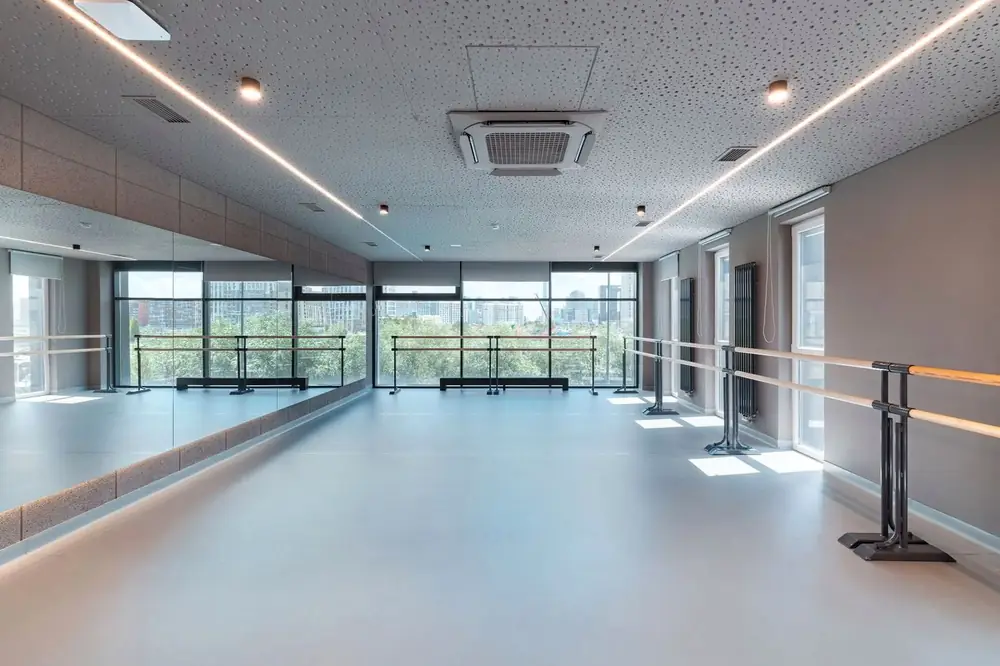
04
Скрипка сыныбы
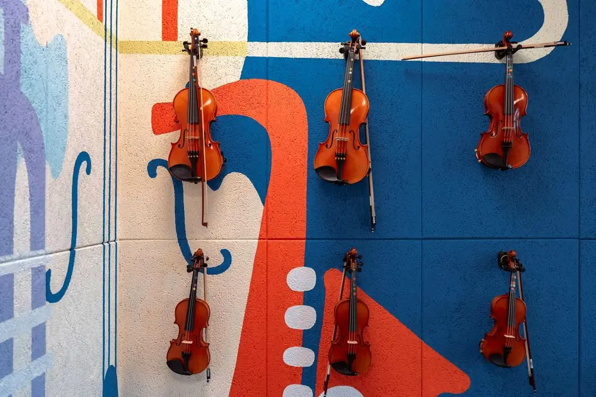
05
Қазақ аспаптары сыныбы
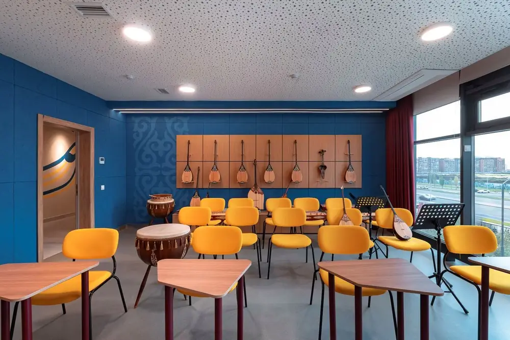
06
Рок-студия
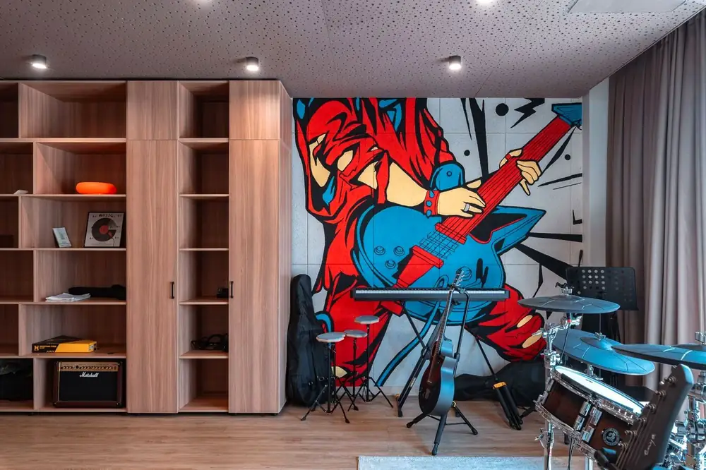
07
Вокал және фортепиано сыныбы
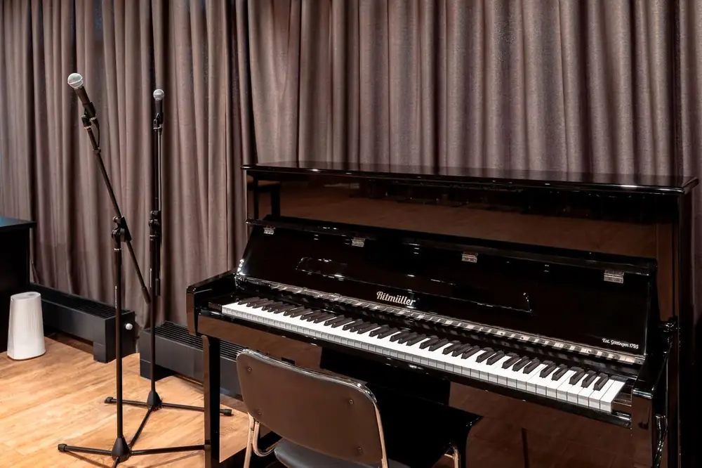
08
Digital-сынып
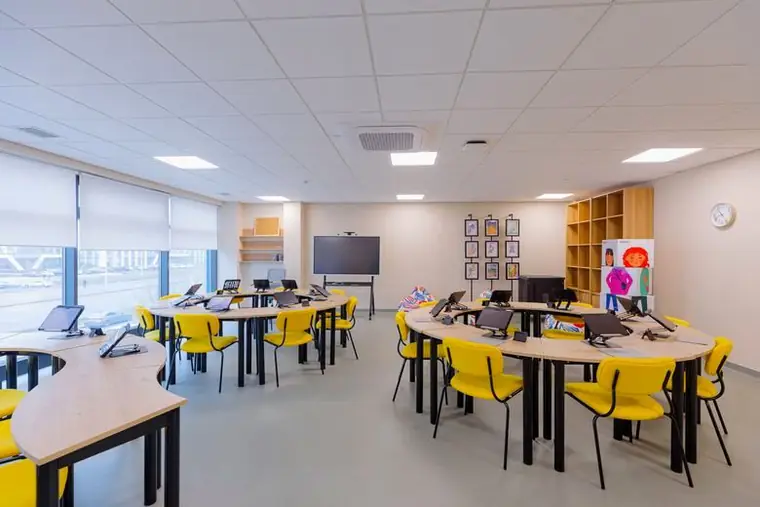
09
Винил қабырғалы лаунж
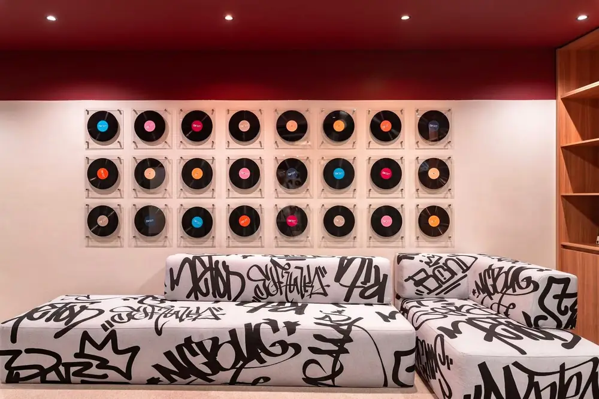
10
Кітапхана және келіссөздер залы
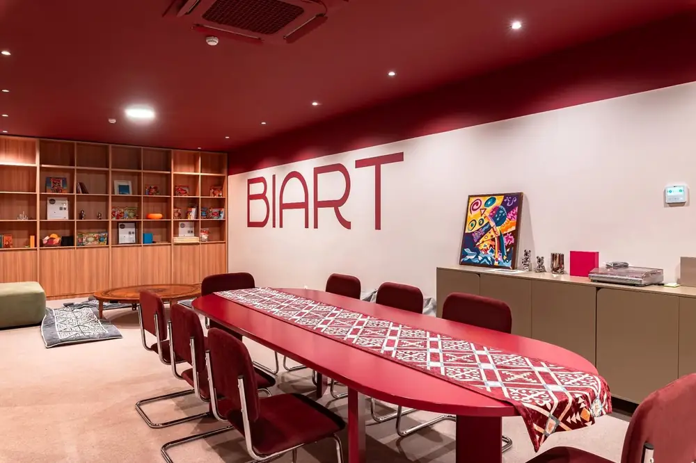
11
Мектеп қасбеті
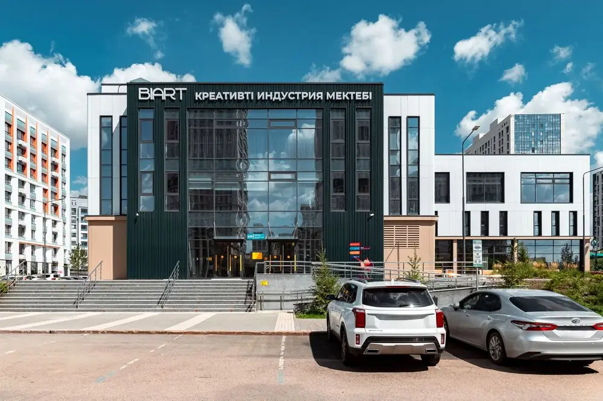
Бағыт- тар
Кез келген курс — аптасына 2 рет 50 минуттан, айына 8 сабақ, абонемент 30 000 ₸. Тізім толығып отырады. Топтар жас бойынша бөлінеді: 6–10, 11–13 және 14–17 жас — сабақ күндері мен уақыты да сонда.
Ересектер топтары кешке және сенбі таңертең өтеді: DJ — бір сағаттан, билер — 50 минуттан. Айына 50 000 ₸, аптасына екі сабақ.
Музыка өнері
эстрадалық вокал · скрипка · виолончель · гитара · фортепиано · домбыра · жетіген · флейта · блокфлейта · кларнет · саксофон · барабан
вокал · фортепиано · скрипка · домбыра · гитара · барабан · виолончель · флейта · блокфлейта · кларнет
вокал · фортепиано · скрипка · домбыра · гитара · барабан · виолончель · флейта · блокфлейта · кларнет
вокал · фортепиано · скрипка · домбыра · гитара · барабан · виолончель · флейта · блокфлейта · кларнет
DJ
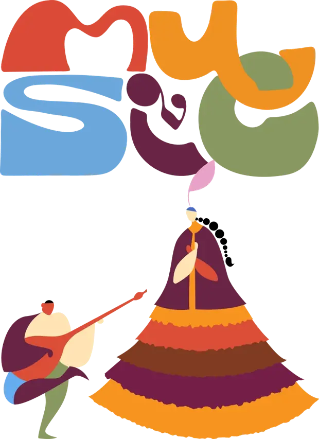
Хореография
hip-hop · K-pop · contemporary · спорттық-бал билері · халық билері және қазақ биі
hip-hop · K-pop · спорттық-бальдық билер · қазақ биі
hip-hop · K-pop · спорттық-бальдық билер · қазақ биі
hip-hop · спорттық-бальдық билер · қазақ биі
спорттық-бальдық билер
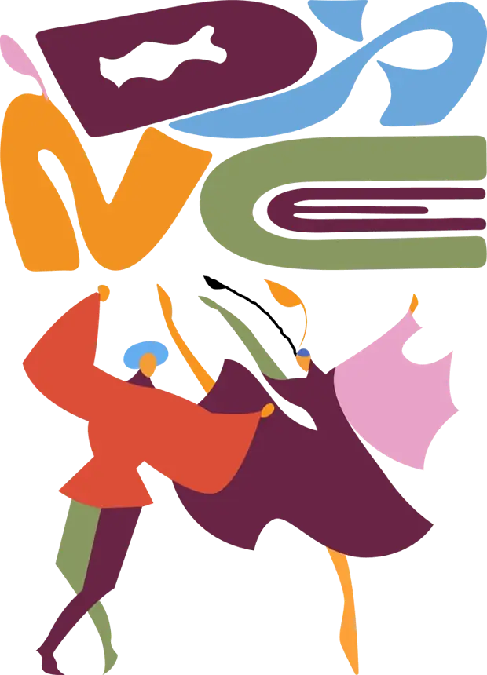
Актёрлік шеберлік
актёрлік ойын · сахна сөзі · сахна қимылы · қойылымдар мен мюзиклдер
актёрлік ойын · сахна сөзі · сахна қимылы · қойылымдар мен мюзиклдер
актёрлік ойын · сахна сөзі · сахна қимылы · қойылымдар мен мюзиклдер
актёрлік ойын · сахна сөзі · сахна қимылы · қойылымдар мен мюзиклдер
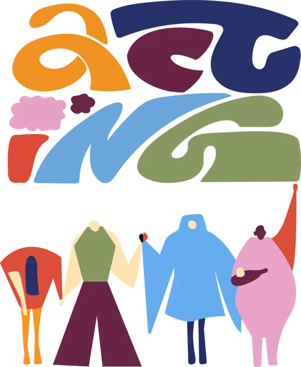
Digital & Visual Arts
иллюстрация · 2D-анимация · stop-motion · fashion-коллаж
иллюстрация · 2D-анимация · stop-motion · fashion-коллаж · бейнелеу өнері
иллюстрация · 2D-анимация · stop-motion · fashion-коллаж
иллюстрация · 2D-анимация · stop-motion · fashion-коллаж
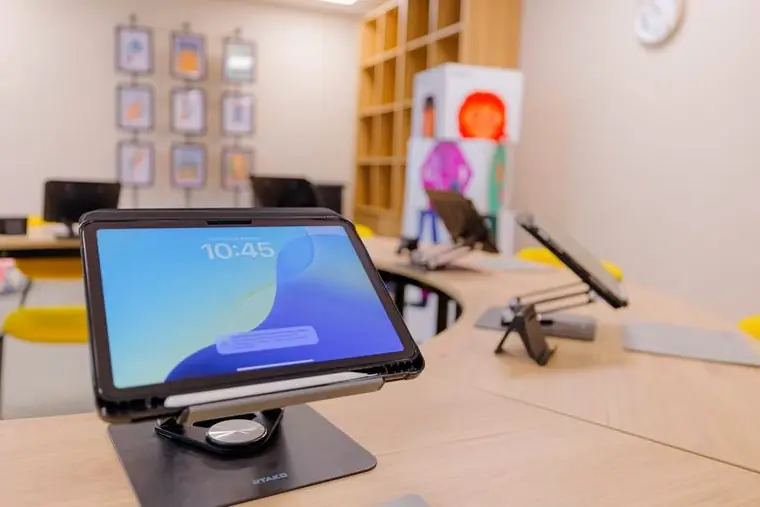
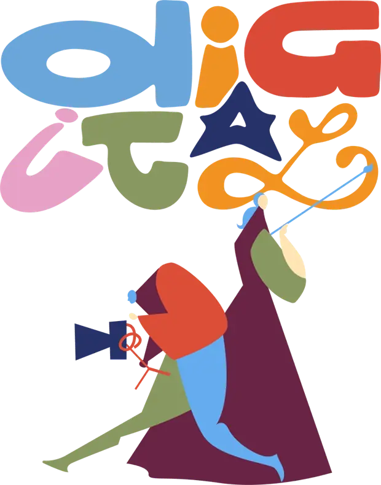
Өз бағытыңызды таппадыңыз ба? Кез келген аспап немесе вокал — жеке, 80 000 ₸ айына. Менеджерге жазыңыз: баланың жасы мен қызығушылығына қарай курс таңдаймыз. Жас бойынша кесте — қай бағыт қай күндері және қай уақытта өтеді, ересектер топтарымен қоса.
Ересектерге қазір DJ және спорттық-бальдық билер ашық. Қалған бағыттар — 6–17 жас аралығындағы балалар мен жасөспірімдерге арналған. Топ пен уақытты таңдау үшін менеджерге жазыңыз.
Біздің командамыз
Кураторлар мен оқытушылар әркімнің шығармашылық әлеуетін ашуға ұмтылады.
Олжас Ибраев
мектеп директоры
Халықаралық тәжірибесі бар театр продюсері және сахналық жобалар менеджері.
Толығырақ оқу
Олжас Ибраев — директор BIART, театральный продюсер и менеджер сценических проектов с международным опытом.
В BIART Олжас руководит направлением развития: формирует команду педагогов и наставников, определяет профессиональные стандарты и задаёт единый вектор образовательных программ, объединяющий все направления школы в целостную систему.
За более чем 11 лет работы в сфере Олжас реализовал театральные и культурные проекты в Казахстане и за рубежом — от национальных сцен до международных площадок Европы. Руководил художественно-постановочными процессами, формировал творческие команды и организовывал крупные проекты в государственных и международных институциях.
Среди его проектов — всемирный театральный фестиваль Avignon Off (Франция), международный фестиваль тюркских народов (Турция), проект «Театр Великой степи» в шести столицах Европы (Берлин, Париж, Канны, Брюссель, Вена, Москва), а также республиканские фестивали и конкурсы, включая Dala Dauysy.
Занимал руководящие позиции: директор Областного драматического театра им. Т. Ахтанова; руководитель творческой службы театра им. М. Ауэзова; заведующий труппой государственного театра «Астана Мюзикл»; заместитель директора по художественно-постановочным вопросам Государственного академического музыкально-драматического театра им. К. Куанышпаева; декан факультета «Ұлттық өнер» КазНАИ им. Т. Жургенова.
В 2024 году участвовал в работе Warehouse Theatre (Лондон), где принимал участие в постановке спектакля «Макбет» и изучал интеграцию цифровых и мультимедийных технологий в современный театр.
Образование: актёр драматического театра и кино (Казахский национальный университет искусств), степень MBA (Университет «Туран»), диплом по менеджменту сценического искусства (Высшая школа деятелей сценического искусства им. Г. Г. Дадамяна, Москва).
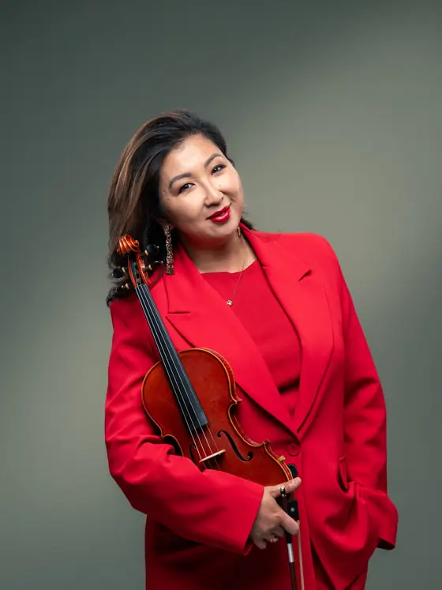
Мадина Бекмадиева
музыка өнерінің кураторы
Халықаралық тәжірибесі бар скрипкашы, педагог және музыкалық жобалар жетекшісі.
Толығырақ оқу
Мадина Бекмадиева — скрипачка, педагог и руководитель музыкальных проектов с международным опытом.
В BIART Мадина курирует направление музыкального искусства, формируя образовательные программы и курируя ансамбли учеников.
Она является автором идеи и основательницей Orchestra SEZIM MUSIC SHOW — коллектива, популяризирующего оркестровую музыку и поддерживающего молодых музыкантов, а также основательницей творческого центра Art Generation.
Мадина — лауреат республиканских и международных конкурсов, её ученики получают награды на фестивалях и конкурсах, включая Nouvelles Etoiles (Франция), Concerto Virtuoso (Москва), «Золотой Олимп» и другие.
Преподаёт в Казахской национальной академии музыки, руководит ансамблем скрипачей «Каприччи», имеет первую квалификационную категорию преподавателя специальных дисциплин (скрипка).
Образование: бакалавр музыки (Казахская национальная академия музыки, диплом с отличием), магистр музыкально-инструментального искусства (Новосибирская государственная консерватория им. М. И. Глинки).
Расул Усманов
актёрлік шеберлік және хореография кураторы
Халықаралық тәжірибесі бар мюзикл актёры, режиссёр және педагог.
Толығырақ оқу
Расул Усманов — актёр мюзикла, режиссёр и педагог с международным опытом выступлений и постановок.
В BIART Расул ведёт курс «Ұлттық театр» и курирует направления актёрского мастерства и хореографии, формируя образовательные программы и мастер-классы для детей и подростков.
Исполнитель ведущих партий в мюзиклах «Notre Dame de Paris» и «Ромео и Джульетта» (на казахском языке), гастролировал во Франции, Австрии, Бельгии, России и США, включая выступление на Madison Square Garden. Солист мюзикла Санкт-Петербургского театра музыкальной комедии: «Мисс Сайгон», «Аладдин», «Величайший шоумен», «Иисус Христос — суперзвезда».
Автор и режиссёр собственных постановок, лауреат Гран-при фестиваля B-FEST 2024 и 2025, обладатель национальной театральной премии «Сахнагер» в номинации «Үміт».
Сотрудничал с продюсерским центром «Димашали», выступал как бэк-вокалист на мировых концертах Димаша Кудайбергена.
Образование: бакалавр «Артист музыкального театра» и магистр «Режиссура» (КазНАИ им. Т. Жургенова и КазНУИ им. К. Байсеитовой), докторант по специальности «Театральная режиссура».
Дана Мусина
digital art кураторы
Интерьер дизайны мен графикалық жобаларда 10 жылдан астам тәжірибесі бар иллюстратор әрі дизайнер.
Толығырақ оқу
Дана Мусина — иллюстратор и дизайнер с более чем 10-летним опытом в сфере дизайна интерьера и графических проектов.
В BIART Дана ведёт курс иллюстрации и курирует направление Digital Art, отвечая за образовательные программы, авторские курсы и мастер-классы для детей и взрослых.
За годы практики реализовала более 60 000 м² коммерческих и жилых интерьеров — жилые комплексы, рестораны, бизнес-центры, общественные пространства, сотрудничала с производствами в Германии и Москве.
Автор иллюстраций, паттернов и графических решений для брендов и кофеен, включая Coffee Boom, Summer и Maro; участник международных выставок в Германии и Москве (Heimtextil). Победитель международного конкурса ЮНЕСКО с публикацией в официальном издании.
Основатель арт-проекта авторских шёлковых платков, автор и ведущая курсов по иллюстрации и цифровому рисованию. Развивает авторский метод «от пятна к эмоции».
Образование: Евразийский национальный университет им. Л. Н. Гумилёва, факультет «Дизайн архитектурной среды и интерьера».
4+ арт-куратор
25+ оқытушы
Абонементтер
Абонементтердің ашық бағалары
Абонемент таңдалған бағытқа рәсімделеді: айына 8 сабақ, аптасына 2 рет 50 минуттан.
Топтық сабақтар
30 000 ₸
1 айлық абонемент
кез келген бағыт: музыка, хореография, актёрлік, digital art
айына 8 сабақ, аптасына 2 рет 50 минуттан
өз сахнамызда қойылымдар, концерттер мен көрмелер
тұрақты педагог және ата-аналарға есептер
Музыка — жеке сабақ
80 000 ₸
1 айлық абонемент
педагогпен бетпе-бет сабақтар
кез келген аспап немесе вокал
жеке бағдарлама және икемді қарқын
ыңғайлы жеке кесте
Сынақ сабағы
0 ₸
алғашқы сабақ тегін
менеджер бағыт таңдап береді
педагогпен және кеңістікпен танысу
міндеттемесіз — әр балаға бір тегін сынақ сабағы
Абонемент бір күнтізбелік айға жарамды (мысалы, «қазан»); ай ортасында келсеңіз — тек қалған сабақтарға төлейсіз. 3 айды бірден төлеуге болады — 90 000 ₸. Төлем Kaspi шоты арқылы.
Афиша
BIART оқиғалары
Саунд-драма · BIART сахнасы · 2026 жылғы 15–16 сәуір
Жауап бар ма?
Актёрлік және музыка бағыттары оқушыларының BIART-тың өз сахнасындағы қойылымы: драмалық көріністер, тірі рояль мен үрмелі аспаптар, жарық пен түтін — нағыз театрдағыдай.
Келесі қойылымдар мен концерттерді Instagram-да жариялаймыз: @biart.kz
Зияткерлік ойын · BIART сахнасы · 2026 жылғы 25 шілде
Не? Қайда? Қашан?
BIART оқушылары ойын үстелінде: зырылдауық, талқылауға бір минут, жүргізушінің сұрақтары және айналадағы жанкүйерлер — мектеп сахнасындағы нағыз білгірлер ойыны.
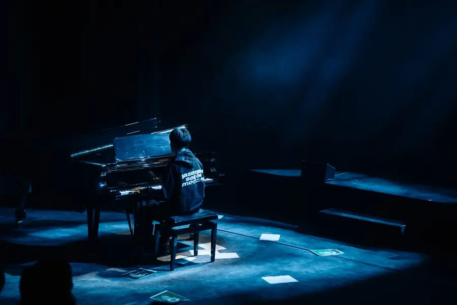
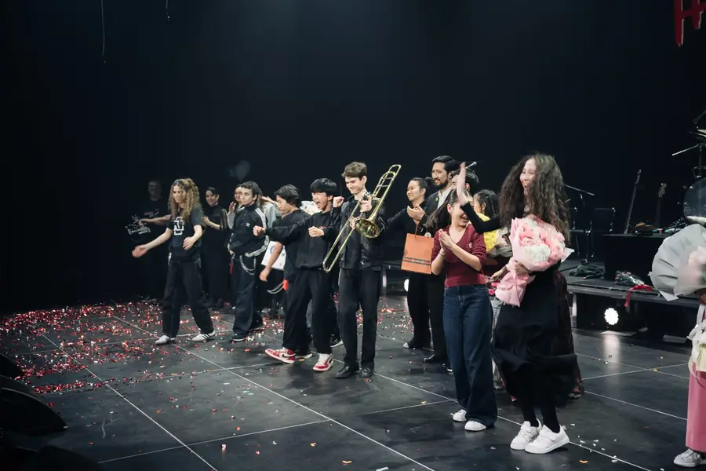
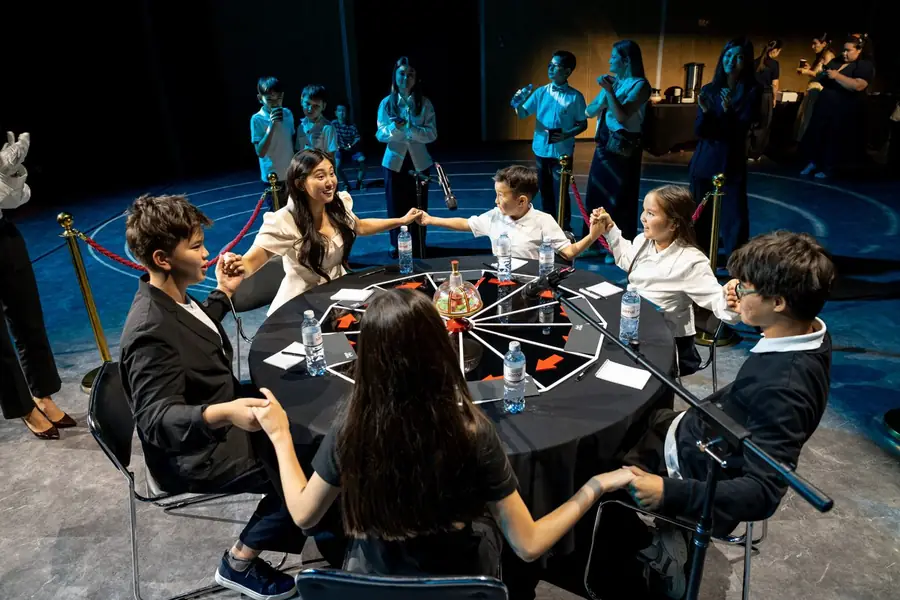
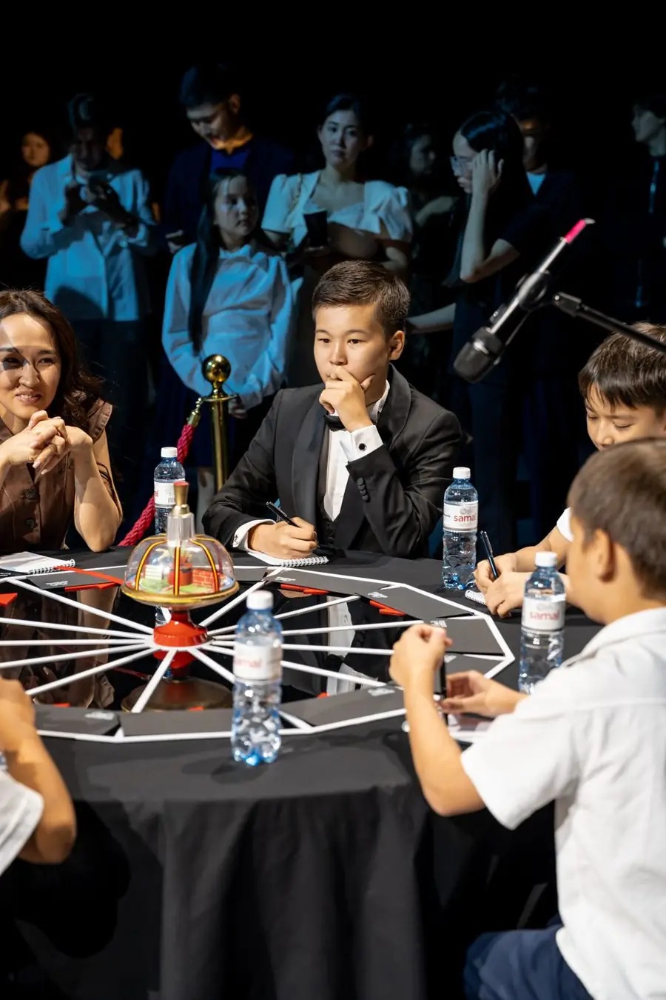
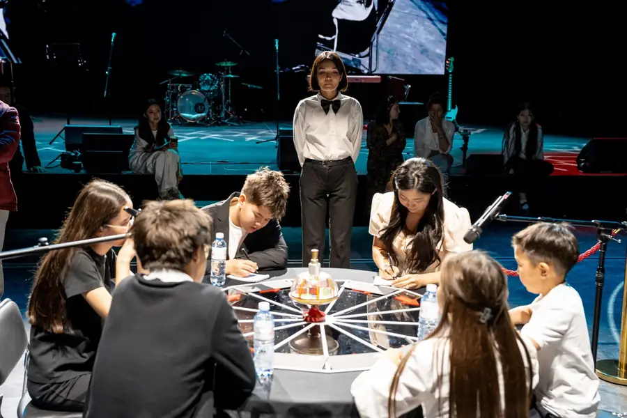
Ай сайын
Оқытушылар концерттері
Педагогтарымыздың тірі өнер көрсетуі — балаңызды оқытатындарды тыңдауға келіңіз.
Жаз
BIART Summer Fest
Мектептің жазғы іс-шаралары: фестиваль, шеберлік сыныптары және барлығына ашық сабақтар.
Семестр соңы
Есептік концерттер мен көрмелер
Оқушылар сахнаға шығып, не үйренгенін көрсетеді: концерттер, қойылымдар, арт-көрмелер.
Ата-аналар BIART туралы
Ата-аналарымыздың пікірлері
Хотим сказать огромное спасибо за курс иллюстрации. Редко когда доча с такой радостью ходила на кружки. Преподаватель Дана Мусина завоевала её сердце. Желаем вам успехов во всём!
Замечательная музыкальная школа! Здесь работают добрые, терпеливые и талантливые преподаватели, которые действительно помогают развиваться. Приятная атмосфера, всё организовано хорошо, а занятия проходят интересно.
Потрясающая школа, не видела ещё таких у нас в КЗ. Дети с удовольствием ходят на танцы и вокал. Я бы сама сюда ходила, если бы взрослым преподавали тоже.
Школа очень красивая и современная: светлые, аккуратные кабинеты, в классах разные музыкальные инструменты. Много направлений — каждый ребёнок может выбрать то, что ему действительно интересно. Атмосфера творческая и дружелюбная, видно, что всё сделано с заботой о детях.
За десять дней дети научились петь и танцевать. Спасибо всем апайка!
Место, где, учитывая индивидуальность, раскрывают таланты. Где уделяют время каждому!
Учителя самые лучшие и хорошо объясняют, качественные инструменты и оборудование. Вид из окна — бомба.
Мне очень нравится: учителя хорошо объясняют, и сам внешний вид филиала очень хороший.
FAQ
Жиі қойылатын сұрақтар
Жауап таппадыңыз ба — WhatsApp-қа жазыңыз, менеджер бірнеше минутта жауап береді.
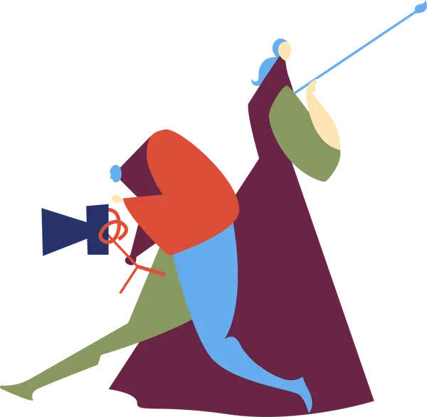
Сабақтар қалай өтеді?
Аптасына 2 рет 50 минуттан тұрақты педагогпен: бағыт бойынша практика, шағын жобалар және көрсетілімге дайындық. Көбірек көңіл бөлінгенін қаласаңыз — музыка бойынша жеке формат бар.
Баламмен кім айналысады?
Балалармен 10 жылдан астам жұмыс істеген практик-педагогтар — жұмыс істеп жүрген музыканттар, әртістер, хореографтар және digital-суретшілер. Әр топта тұрақты педагог, бағытты өз саласының кәсіби маманы басқарады.
Абонементке не кіреді?
1 күнтізбелік айға абонемент — 30 000 ₸: таңдалған бағыт бойынша 8 сабақ, аптасына 2 рет 50 минуттан. Музыкадан жеке сабақтар — айына 80 000 ₸. 3 айды бірден төлеуге болады — 90 000 ₸.
Нәтижені қалай көремін?
Педагогтан ай сайын қысқа есеп және тоқсан сайын толық есеп. Оған қоса тоқсан сайын көрсетілімдер: BIART-тың өз сахнасында концерттер, көрмелер мен қойылымдар — балаңыздың не үйренгенін өз көзіңізбен көресіз.
Сынақ сабағына қалай жазыламын?
Бізге WhatsApp-қа жазыңыз — менеджер жасы мен қызығушылығына қарай курс таңдап, тегін сынақ сабағына жазады. Әр балаға бір сынақ сабағы тегін; екінші бағыт бойынша сынақ — бір реттік ақылы сабақ. Сынақтан кейін педагог қолайлы топты ұсынады.
Бала сабақты жіберіп алса ше?
Дәлелді себеппен, анықтама болса, бір абонемент ішінде 2 жіберілген сабаққа дейін өтеуге болады — топтағы орын сақталады, педагог қуып жетуге көмектеседі.
Бірнеше бағытта бірден оқуға бола ма?
Иә — мысалы, домбыра және K-pop. Әр бағытқа жеке абонемент рәсімделеді (айына 30 000 ₸), кестені сабақтар қиылыспайтындай етіп құрамыз.
Кері байланыс
Сұрақтар туындады ма?
Байланыс деректеріңізді қалдырыңыз — менеджеріміз сізге қоңырау шалады.
Байланыс
Өтінім қалдыру
Мекенжай Астана, Сығанақ көшесі 17/41 («Зелёный квартал» ТК жанында) · Яндекс Карталар · 2ГИС
Жұмыс уақыты дс–жм 9:00–21:00, сб 10:00–17:00, жс — демалыс
Телефон / WhatsApp+7 700 710 33 00
Instagram@biart.kz